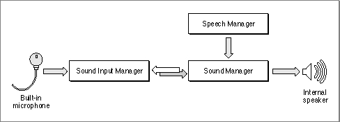
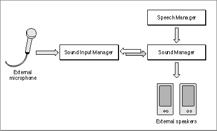
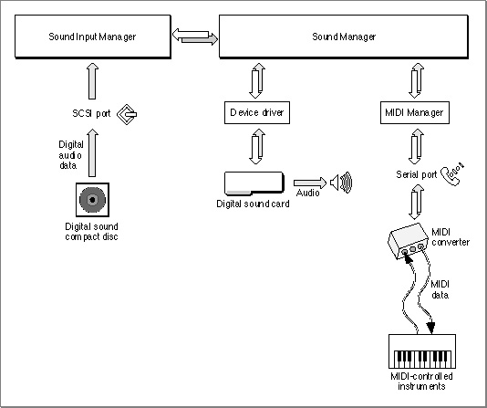
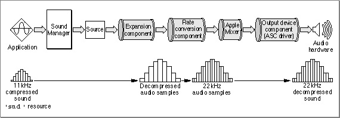
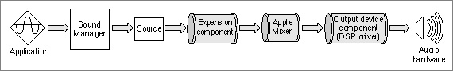

Sound Capabilities
The Macintosh family of computers provides sound input and output capabilities that far exceed the capabilities of most other personal computers. The principal reason for this is that the hardware and software aspects of creating or recording sounds are more tightly integrated with one another than they are on other personal computers.
Figure 1-1 illustrates the basic audio hardware and the sound-related system software that are now standard on all Macintosh computers.Figure 1-1 Basic sound capabilities on Macintosh computers

The audio hardware includes an internal speaker (for producing sounds), a microphone (for recording sounds), and one or more integrated circuits that convert digital data to analog signals, or analog signals to digital data. The actual integrated circuits that perform the conversion of digital to analog data (and vice versa) vary among different models of Macintosh computers. What's important is that, together with the available sound-related system software, the basic audio hardware provides a wide range of sound input and output capabilities, including
In general, you'll interact directly with the system software that provides these and other capabilities. The Macintosh sound architecture includes three principal system software services:
- playback of digitally recorded (that is, sampled) sounds
- playback of simple sequences of notes or of complex waveforms
- recording of sampled sounds
- conversion of text to spoken words
- mixing and synchronization of multiple channels of sampled sounds
- compression and decompression of sound data to minimize storage space
The basic sound hardware and system software also provide the ability to integrate and synchronize sound production with the display of other types of information, such as video and still images. For example, QuickTime uses the Sound Manager to handle all the sound data in a QuickTime movie.
- The Sound Manager provides the ability to play sounds through the speaker. It also provides an extensive set of tools for manipulating sounds. You can use the Sound Manager to alter virtually any characteristic of a sound, such as its loudness, pitch, timbre, and duration. You can also use the Sound Manager to compress sounds so that they occupy less disk space. The Sound Manager can work with sounds stored in resources or in a file's data fork. It can also play sounds that are generated dynamically (and not necessarily stored on disk).
- The Sound Input Manager provides the ability to record sounds through a microphone or other sound input device. It manages the standard sound recording dialog box (shown in Figure 1-12 on page 1-17) and can record sounds into resources or into files.
- The Speech Manager provides the ability to convert written text into spoken words. You might use the Speech Manager to read aloud a block of text that for various reasons cannot be sampled (perhaps the amount of text is too large to be recorded and then replayed, or perhaps the text itself is generated dynamically by the user). The Speech Manager allows you to select from among a number of different voices, alter some of the readback characteristics (such as speech, pitch, and volume), and provide custom pronunciation dictionaries.
It's very easy for users to enhance the quality of the sounds they play back or record by substituting different speakers or microphones for the ones built into a Macintosh computer. All current Macintosh computers include a stereo sound output jack that allows users to add high quality speakers (such as the AppleDesign Powered Speakers). A user can also substitute a higher quality microphone for the one supplied with the computer. Figure 1-2 illustrates a slightly better audio configuration than the one shown in Figure 1-1.
Figure 1-2 Enhanced sound capabilities on Macintosh computers

Note that the enhanced sound input and output capabilities shown in Figure 1-2 are provided entirely by the improved hardware. The system software (in particular, the Sound Manager and the Sound Input Manager) can support both the built-in audio hardware and any external hardware connected to the built-in audio jacks.
It's possible to enhance the audio capabilities of a Macintosh computer even further. For example, a user can add a NuBus(TM) expansion card that contains very high quality digital signal processing (DSP) circuitry, together with sound input or output hardware. These cards typically bypass the standard Macintosh sound circuitry altogether and therefore require additional software (a device driver) to work with the Sound Manager or the Sound Input Manager. The system software is, however, designed to make it easy for developers to add software to drive their sound output or sound input devices.
A user can also enhance the audio capabilities of a Macintosh computer by adding a MIDI interface to one of its serial ports. MIDI (the Musical Instrument Digital Interface) is a standard protocol for sending audio data and commands to digital devices. A user can connect any MIDI devices (such as synthesizers, drum machines, or lighting controllers) to a Macintosh computer through the MIDI interface. Apple Computer supplies a software driver, the MIDI Manager, to control the flow of MIDI data and commands through the MIDI interface.
Figure 1-3 illustrates a very high capability sound and music configuration built around a Macintosh computer. This enhanced hardware and system software configuration allows users to run digital sound editing or recording applications and MIDI sequencing applications.
- Note
- The MIDI Manager is not documented in this book. For complete information about the MIDI Manager, contact APDA.

Figure 1-3 High quality sound capabilities on Macintosh computers

It's possible to enhance the sound environment on a Macintosh computer by adding software alone, for example by adding custom sound compression/decompression components (codecs). Apple Computer supplies codecs that can handle 3:1 and 6:1 compression and expansion, which are suitable for most audio requirements. For special purposes, however, it might be advantageous to use other compression and expansion ratios or algorithms. The Sound Manager can use any available codec to handle compression and expansion of audio data.
More generally, the Sound Manager supports arbitrary modifications on sound data using stand-alone code resources known as sound components. A sound component can perform one or more signal-processing operations on sound data. For example, the Sound Manager includes sound components for compressing and decompressing sound data (as described in the previous paragraph) and for converting sample rates. Sound components have a standard programming interface and local storage, which allows them to be hooked together in series to perform complex tasks. For instance, to play an 11 kHz compressed sampled sound on a Macintosh II computer, the Sound Manager needs to expand the compressed data into audio samples, convert the samples from 11 kHz to 22 kHz, mix the samples with any other sounds that are playing, and then send the mixed samples to the available audio hardware (in this case, the Apple Sound Chip). The Sound Manager uses four different sound components to accomplish this task, as shown in Figure 1-4.
Figure 1-4 A sound component chain

Except for the lowest-level components that communicate directly with hardware (here, the Apple Sound Chip), the components of this chain operate solely on a stream of bytes. This allows Apple and other developers to create sound components that operate independently of the actual sound-producing hardware available on a particular Macintosh computer. This also allows the Sound Manager to modify the component chain used at any time according to the actual capabilities of the output hardware. For example, a digital signal processing card might be able to do rate conversion internally. In that case, the Sound Manager can bypass the rate conversion component and send the 11 kHz samples directly to the DSP card, as shown in Figure 1-5.
Figure 1-5 A sound component chain with a DSP board

In general, an application that wants to produce a sound is unaware of the sound component chain required to produce that sound on the current sound output device. The Sound Manager keeps track of which sound output device the user has selected and constructs a component chain suitable for producing the desired quality of sound on that device. As a result, even though the capabilities of the available sound output hardware can vary greatly from one Macintosh computer to another, the Sound Manager ensures that a given chunk of audio data always sounds as good as possible on the available sound hardware. This means that you can use the same code to play sounds, regardless of the actual sound-producing hardware that is available on a particular machine.
The Sound Manager provides sound components for modifying and producing sounds on the built-in audio hardware and on any hardware attached to the sound output jack. The Macintosh sound architecture currently allows you to add sound components for two special purposes: to support alternate compression and decompression algorithms and to support third-party audio hardware. See the chapter "Sound Components" in this book for information on developing codecs and sound output device components.
The following sections describe in greater detail the operations of the Sound Manager, the Sound Input Manager, and the Speech Manager. You'll use the Sound Manager to produce sounds, the Sound Input Manager to record sounds, and the Speech Manager to generate speech from text.
- IMPORTANT
- You don't need to know how to develop sound components simply to play or record sounds on Macintosh computers using the available sound output or input devices.